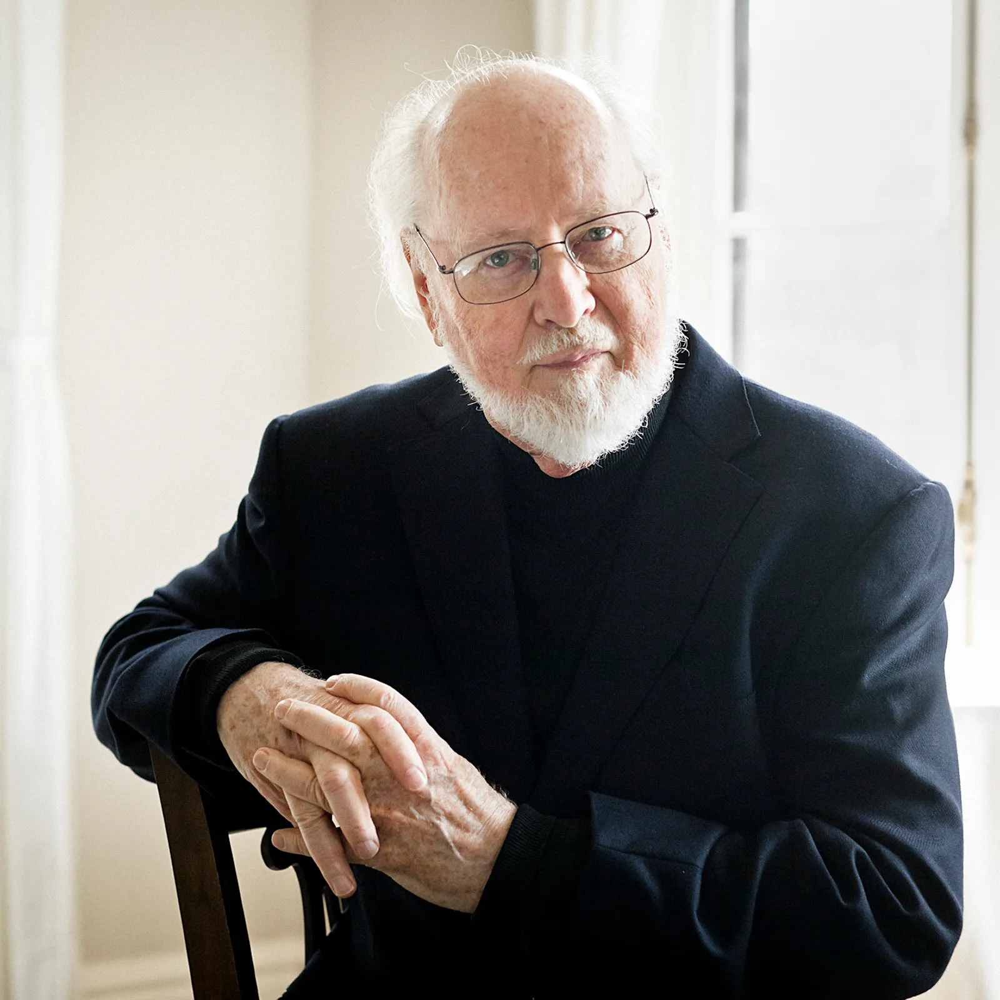

About 20th Century and Modern Music
The 20th Century brought about many different movements in music. One of the first was called "impressionism", with 2 of its main composers being Claude Debussy and Maurice Ravel. This music was similar to the impressionist art of the time, including blurred themes and new chord combinations. During this time, "neoclassicism" emerged as a prominent style. Compsers such as Igor Stravinsky and Erik Satie used the style of the classical era to compose new works that featured balance and emotional restraint, rejecting the stylist changes from the romantic era. During the 20th Century, we also have the emergence of atonal music and more inventive compositions. John Cage experimented with new approaches to creating music, utilizing methods of composing such as chance and the prepared piano.
Today, the closest thing we have to "classical style music" is film music. Composers such as John Williams, Hans Zimmer, and Howard Shore compose the iconic background music that we know and love from our favorite films. Much of this music is purely instrumental, utilizing large orchestras to create intense and emotional music to fit each film. Some of the most recognizable film compositions include the themes to "Harry Potter", "Jaws", and "Lord of the Rings".
20th Century/Modern Composers
Igor Stravinsky

John Williams
John Cage

Click a composer's picture to learn more!